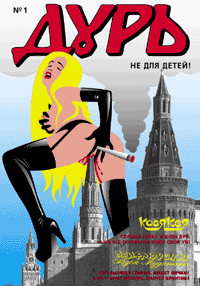
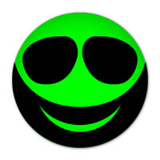
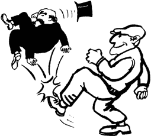
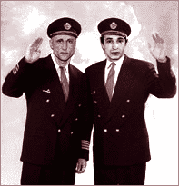
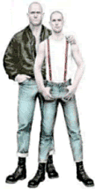
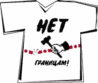
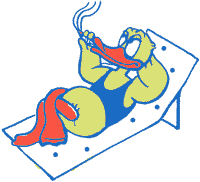

22.03.02

Леха: Ну чо, жир, давай начинай...
Илюха: Ну не знаю, самим себя рекламировать... Как-то неудобно...
Леха: Ты чо, жир? Неудобно самому свой пылесос сосать, ептыть... Своему минарету
самому минет делать, ептыть... неудобно... Давай, жир, короче...
Илюха: Ну, ну...
Леха: Хуй гну. Короче, и чо?
Илюха: Чо, чо... Тьфу-тьфу-тьфу, через левое плечо не горячо?
Леха: Горячо.
Илюха: А через правое не горячо?
Леха: Горячо.
Илюха: А в ябло утюгом мало не покажется?
Леха: Ты чо, жир, аххуел? Забыл как мы под Кандагаром вместе оборону
держали?!!
Илюха: Ну извини, сам же эта... е... докопался, е. Буду короток: наконец-то вышел
первый номер журнала русских комиксов "Дурь". И к нему рэп-оперы "Дурь"
впридачу... Если у тебя есть две ноги, спеши купить в "ОГИ"...
Леха: Ты совсем аххуел, карась. Чтобы я в это говняное "ОГИ"... Да не в жисть. И
дури у меня полные штаны. Так шо хуй я туда пойду. Ищи дурака, тока не такого,
как я, а другого, без елдака.
Илюха: Да и мне она на хуй не сдалася. Увижу кого с этой дурью, так ваще
атпидарасю... И так от нее моя башка варит не хужей твоего горшка. Пока, тупак!
Леха: Пока, кубик!
Хачик Литой
12.01.02 ЛИЦО КАВКАЗСКОЙ НАЦИОНАЛЬНОСТИ

Жил на метро "Текстильщики" 18-летний фашист Вован. Был Вован самым клевым парнем на районе: большие кулаки, маленькая голова и тяжелые ботинки. Сколотил Вован банду из местных подростков. Каждые выходные банда Вована нещадно опиздюляла местных рэпперов, чернокожих, кавказцев и азиатов. И все бы было хорошо
Но однажды, воскресным утром, просыпается Вован с перепою. Видит - уже 11.30 a.m. Бля, как поздно! Подростки из вовановой банды уже заебались под окном тусоваться, дожидаясь вожака. Надо быстрее на улицу, нехер арийскому войну в зеркало смотреться. Быстро напялил Вован одежду, вышел к подъезду, подходит к соратникам.
Но вместо привычного "Зиг Хайль!" слышит Вован: "Ах ты антифашист поганый!". Далее - удар в табло, падение и жесткое добивание ногами Лежит Вован в луже крови и охуевает, весь в синяках и непонятках. Вспоминает Вован вечер субботы: бар, пиво, водка, пиво, пиво,
водка, водка, водка, пиво, пиво Далее - телка какая-то, даже вроде симпатичная, Вован ей все про ЦСКА, White Power, 88 и национал-социалистическое будущее России объясняет. А телка, сука, не дала и значок какой-то Вовану на бомбер прицепила
Ну конечно! На том значке было написано - "ЛИЦО КАВКАЗСКОЙ
НАЦИОНАЛЬНОСТИ". Подробнее - на avtonom.org в разделе
"проекты".
Лентяй Литой
21.12. 2001 КАК ВАСЯ ПИСЬКИН СТАЛ РАДИКАЛЬНЫМ ЛЕНТЯЕМ

Жил-был Вася Писькин. Болел за "Динамо", пил водку и пиво, голосовал за СПС. Работал юристом в непонятном офисе какой-то непонятной фирмы. Был женат. Жена у него была хорошая: после 8 часов рабочего дня (в другой непонятной фирме) всегда готова была и посуду помыть, и накормить, и постирать, и вообще... По пьяной лавочке, правда, Вася Писькин мог и грубое слово жене сказать, и затрещину дать... Но так как дубленки/побрякушки Вася Писькин покупал жене исправно, она на него не очень сильно обижалась и честно родила Васе Писькину сына и дочку.
Вася Писькин смотрел в светлое капиталистическое будущее с высоко поднятой головой. После тяжелого рабочего дня, правда, ночью не всегда с женой все получалось... Тогда Вася Писькин отрешенно погружался в возвышенные мечты: вот вырастут его детки, а Вася Писькин к тому времени деньжонку подкопит, и отправит Вася Писькин своих детей в престижный вуз учится. Там они поучатся, получат престижный диплом, откроют свое дело, будут помаленьку кидать своих работников да клиентов, накопят еще больше денег, по канарам да гавайяам кататься будут, да и престарелых родителей не забудут: отправят их в элитный дом престарелых. А в том доме престарелых... Будут стоять золотые унитазы!
Мечта о доме престарелых с золотыми унитазами стала для Васи Писькина той путеводной звездой, что помогала сносить всю ирреальность, тупость и нищету повседневной жизни "молодого профессионала". Все бы так и продолжалось... Но вот однажды: приходит Вася Писькин в пятницу утром в свой офис. А Начальник ему и говорит: "Вася Писькин, тут дело такое... У нас выгодный заказ... А ты - работник опытный, ценный и исправный... Ты вполне можешь поработать в эти выходные... Извини, что раньше не предупредил..."
Начальник был на 110% уверен в покорном согласии Васи Писькина остаться без выходных... Но не тут-то было. Вася ему и отвечает: "Слушай, ты Мудило Начальственное, я теперь тебе - не Вася Писькин, я - Радикальный Лентяй! Я теперь тебе - не "работник опытный, ценный и исправный", а революционный рабочий и сторонник анархо-феминизма! А вот ты - Мудило Начальственное. Кроме как до секретарш домогаться да работникам зарплату задерживать, ты ничего и не умеешь... Так что работать в выходные я не собираюсь!"... Как же это Вася Писькин вдруг сделался Радикальным Лентяем? Ничего удивительного: он просто посетил сайт http://antijob.tk/!!!
17.10.2001
Всем! Всем! Рэпперам! Всем! Русский слем!
Можно принять участие!
Лейбл Поп-графика (владелец бренда "Русский слем"), клуб "Прокт О.Г.И." и интернет-бутик озон.ру представляют не обычную поэтическую муру, а реальное мочилово поэтов-боксеров "Русский слем".
Обязательны перчатки и шлем!
В сезоне 2001-2002 года 5 поединков и суперфинало.
Короче, начисти поету ебало!
Читай, пиши, получай барыши!
Слем-правила

25.09.2001
По сведениям из информированных пг-источников известия о поимке сбежавших из Бутырской тюрьмы преступников являются дезинформацией. На самом деле Безотечества, Железогло и Потерявшипамять погибли в Америке во время совершения терактов. Сообщения о побеге сразу вызвали массу вопросов, ведь, как известно, из Бутырки никто и никуда просто так не бежит. Судя по всему, смертники, которым нечего было терять, прошли специальную подготовку. Именно они находились за штурвалами разбившихся в Вашингтоне и Нью-Йорке самолетов. Беглецов разыскивали по всей стране, но теперь становится ясно, почему эти поиски оказались безрезультатными.
Побег из Бутырки странным образом напоминает известный побег из американской тюрьмы Алькатрас, совершенный Фрэнком Моррисом и братьями Энглинами. По одной из версий, впрочем, кажущейся редакции маловероятной, Безотечество, Железогло и Потерявшипамять и есть исчезнувшие тридцать с лишним лет назад американцы. Попав в Россию, они приняли эти типичные, на их взгляд, русские фамилии, на самом деле крайне неблагозвучные для уха любого россиянина. И вот тридцать лет спустя "мушкетеры" воплотили свою страшную мечту о мести американскому правосудию.
Лентяй Фалько
25.08.2001
Иду я тут как-то по улице сам по себе, никого не трогаю, размышляю. Вдруг крик: "Эй, братан, стой!" Смотрю, бежит ко мне со всех ног какой-то черный человек, ну, в смысле, африканец. Причем рожа у него какая-то необычайно зверская. Подбегает, скалится. Как дела, спрашивает. "Нормально", - отвечаю, а сам думаю, тебе-то, образина, хули, как мои дела обстоят. А он - ну, здорово, а то успел уже, мол, соскучиться, две недели ведь как не виделись. "Э, нет, - говорю. - Мы с тобой, брат, не то что две недели, мы с тобой вовсе не виделись и надеюсь, что больше никогда и не увидимся. Ты, брат, небось, просто обознался. Мы же, белые, для вас черных все на одно хрюсло". "Как же, - отвечает, - обознался. Я ведь твой товарищ и друг Катала". "Ну, все, - говорю, - шутки в сторону. Я хоть и не расист, а, скорее, напротив и за вас черных горой стою, но тут могу не выдержать и разозлиться. А в гневе я, ты уж извини, чудовищно страшен и себя нисколечко не контролирую. Так что ты моего друга не трожь". "А ты приглядись", - говорит. Ну, пригляделся я из чистого любопытства и вижу.... Черт, действительно, похож! Точь-в-точь такая же мерзкая рожа, как у Каталы. Только из-за шоколадности чуть-чуть поприятней кажется. "Постой, - удивляюсь, - как же так? Катала ведь вроде белый, а ты вроде черный". "Все просто, - рассказывает. - Я же всю жизнь переживал, что родился не черным, а белым. Какой же я, думал, хуевый из-за того, что белый. А будь я черным, я бы был таким классным! Охуительно пел бы, плясал, вообще б не парился. Все девки моими были бы. А по вечерам бы лежал на солнышке и безмятежно тянул ганджубас. В общем, совсем я тут депресснул. И вдруг вспомнил про Майкла Джексона. Он же запросто из черного переделался в белого. Так почему я не могу поступить наоборот? Короче, списался с ним по и-мейлу. Узнал, что и как. И сделал операцию. А с Майклом мы теперь друзья по переписке. Он - первый черный, ставший белым, а я первый белый, который стал черным!" "Здорово", - говорю, а сам подыхаю от зависти и думаю, ну, почему, почему, этот Катала всегда первый, а я опять, опять буду вторым!

25.07.2001
Вчера, гуляя по центру, встретил своего товарища, пг-Каталкина. Каталкин почему-то был брит наголо, в подтяжках и огромных ботинках. "Так, - с ужасом подумал я, - потерял последнего товарища". И пустился наутек. Однако я толстый и бегаю с трудом. Быстро запыхался. Так что уже у метро Катала настиг меня и схватил за шиворот. "Ты куда это, жир?" - спрашивает. "Как куда, ты ж теперь скинхед!" "Скинхед, ну и чо?" "Как чо, кому ж охота пизды получать!" "А чо пизды, ты чо нацик?" "Да не, я не нацик, это ж ты теперь нацик!" - говорю, а сам думаю, во, идиот какой тупоголовый! А он: "Да не, я хороший скинхед, это плохие - нацики, только они не скины, мы их зовем - бонхеды!" "Да, да, конечно", - соглашаюсь, а сам быстрее домой. Не поверил я ему, понятно дело. Но на всякий случай решил по сети порыскать, авось чего занятного нарою. И нарыл! Не надул Катала. Взаправду, оказалось, что есть пиздатые скинхеды и хуевые бонхеды. Вот сайт "Скинхеды против нацизма". Полно материалов про идеологию, музыку и акции.
Третьего дня под утро позвонил антиглобалист Катала. "Эврика!" - говорит. "Чо?" - спрашиваю. "Ты, жир, радио слушаешь?" "Нет, а чо?" "Все прояснилось!" "Что именно?" "Просто раньше это замалчивали!" "Так что, что прояснилось-то?" "Ну как что, почему в Москве жара невъябенная!" "Почему это?" "Да это ж глобалисты дыру озоновую проделали! Своим производством зловредным!" "И чо теперь будет?" "А ничо! Глобальное потепление! Слышал про такое?" "Ну, - отвечаю, - чо плохого-то". Хорошо, мол. В Арктике льды растают. У нас море будет. Лежи, загорай. Как в Африке. "Не, - говорит, - ни хуя". До нас, дескать, море не дойдет. Будет засуха. Овощи все вымрут, фрукты. Хлеб, сука, не взойдет. Короче, хана. "И чо теперь делать?" - спрашиваю. "Да ничо, - злорадничает. - Поздно уже. Доигрались. Спать ложись". И отключился. Дзинь-дзинь-дзинь. Успокоил, тоже мне. И как я теперь засну?

1.07.2001
Гуляя по центру, встретил своего товарища пг-Каталу. На Каталкине была майка с надписью "Нет границам!". "Ты что, - удивился я, - глобалист?" "Нет, - радостно сияя, пояснил Каталкин. - Я теперь антиглобалист!" "Как анти, - говорю, - глобалисты ж как раз за объединение всеобщее выступают!" "Не, - отвечает, - это они за объединение жирных типа тебя выступают. А бедным ребятам типа меня - хуй. Паспорта, визы и все такое. Я вот даже ни в один лагерь на нашу акцию поехать не могу. Только разве что в Польшу, в Крынку. Так что ты, жир, все понятия путаешь". "Ага, как же путаю", - подумал я про себя и отправился домой. Но на всякий пожарный решил в Интернетике порыться, проверить. И что вы думаете? Не наврал Катала-мотала, старый пес. Вот сайты движения "Нет границам!" www.noborder.eu.org,
netgranitsam.boom.ru

15.06.2001
Среди ночи разбудил перевозбужденный пг-Катала. "Я, - говорит, - догадался, почему у нас в стране ничего не происходит". "Почему?" - спрашиваю. "Ну, как почему, я же вот, например, Весы по гороскопу". "Ну и чо?" "Как ну и чо, вот ничего решить и не могу". "И чо?" "Чо, чо, ты вот тоже, например, Весы". "И чо дальше-то?" "Ну, тоже ничего решить не можешь. Вот мы с тобой ничего и не делаем". "Ну, а мы-то здесь при чем?" "Как при чем, аналогия!" "Какая еще аналогия?" "Да ты не гони собак, - говорит. Это он так всегда все поговорки путает. - Путин-то, я узнал, тоже Весы!" "Да ты чо?" "Вот те и чо! - объявляет торжественно. - Все думают, что он мутит чо, скрытничает, а он просто ничего решить не может! Вот и говорит левым левое, правым правое, а сам ничего не делает!"
|